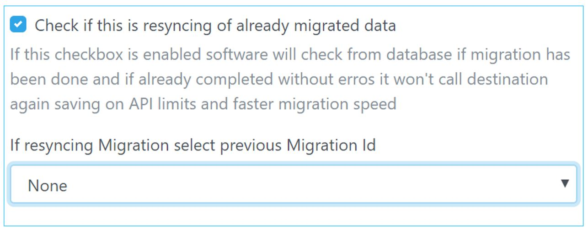

Conflict Behaviour:
Note when encountering a same folder at destination when doing migration system does not creates a new folder at destination but only copies files under that folder from Source to Destination. However when encountering a file with same name behavior such as Skip, Replace or Rename can be selected.
Sync Migration:
When doing large migration or users having lot of file contents follow the below steps:
Do a First pass Migration: For First Pass Migration option also select rename option when encountering files of same name. It is impossible that this scenario will occur because files will be created first time in first pass migration, however in cases when two file exists of same name (specially in case of Google) you will be able to migrate the other file as well with a number appended to it. You are allowed not to select Rename in first pass migration but in that case if you see reports files having error with “Conflict” for first pass migration, they are probably files with same name.
Other options are used when you are trying to overwrite the contents of files you have already migrated by rewrite options or just skipping/ignoring files if same file names are encountered. Normally they are applied when you are doing a second pass migration. For files that have encountered failure and after respective correction is done you can select this option to ignore files with same name or rewrite them.
Then excute a Second Pass Migration: During second pass migration application currently do not checks or compare timestamps at source and destination folder.
It is recommended you create a new folder at destination tenant for doing the migration. To do this enable checkbox for "Check if source destination is not root folder" and enter folder name. Folders are automatically created if not present during migration.
Use this option to resync or migrate again for files that errored out. Migrator Application maintains its own local database. If this option is selected a list of all previous migration is shown (if another folder was chosen as root folder it is also shown in dropdown). A user can select from dropdown migrations done earlier. When a previous migration is selected to sync with while Source is still read for getting list of files to be migrated, destination is only read or written when there is a new file/folder in source or any files in previous migration errored out.
Note: In this option it is important that users who were migrated in earlier migration are entered in list of users to be migrated, as well as if a new folder other than root folder was entered for migration, same folder name is entered in Root destination folder. If this step is not done, Resyncing wont be fast.
Note: During resyncing with this option selected file behavior can be configured as replace or rename. Use "replace" if you feel files uploaded in first pass migration are not migrated correctly but still showing in destination tenant. Use "rename" otherwise which means if files of same name are present in source folder they are also migrated with new names. You can also use Skip/Ignore but in this options if files are present in destination tenant but not migrated properly, you will not be able to rewrite them.

Users can still resync their files without selecting this option. For that purpose, leave above box unchecked, use same user list and same folder name (which was selected as destination folder to migrate contents). In file behavior select Skip/Ignore. While this option can resync as outlined above this may not replace files errored out. Additionally, destination is read every time to check if file is present at same location, in certain cases hitting API limits in case of very large migration.